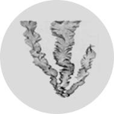
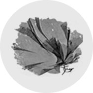
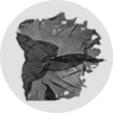

일 년에 딱 한 번 생산되는 프리미엄의 원초, 곱창돌김입니다.
| 구분 | 일반김 | 돌김 | |||
|---|---|---|---|---|---|
| 참김 | 방사무늬김 | 잇바디돌김 | 모무늬돌김 | ||
| 학명 | Porphyra tenera | P. vezinensis | P.dentata | P.seriata | |
| 사진 |  |  |  |  | |
| 특징 | 특징 | 타원형 또는 난형으로 가장자리에 주름이 많음 | 타원형으로 기부보다 상부가 넓음 | 대나무 잎 또는 달걀 모양으로 가장자리가 톱니 모양 | 원형 또는 콩팥형으로 줄기가 짧음 |
| 색상 | 자홍색, 갈홍색 | 밝은 자색 | 갈홍색 | 자홍색 | |
| 크기 | 길이 : 15~25㎝ 폭 : 7~12㎝ |
길이 : 10~20㎝ 폭 : 3~10㎝ |
길이 : 10~20㎝ 폭 : 2~10㎝ |
길이 : 4~8㎝ | |
| 이용 형태 |
|
|
|||
잇바디 돌김은 곱창처럼 길면서 구불구불하다 하여, 일명 ‘곱창김’이라고 부르며, 맛과 향이 만생종인 일반 돌김에 비해 뛰어납니다.
· 잇바디 돌김은 홍조류 보라털과의 해조이며, 길이는 10~20㎝ 입니다. 식물체는 참대 잎 또는 달걀 모양입니다.
· 잇바디 돌김은 남해안에서 대량으로 양식되고 있으며 다른 종에 비하여 맛과 향이 뛰어나 고가에 매매되고 있습니다. 그래서 경제적으로도 높은 부가가치를 가지는 고품질의 양식 품종으로 각광받고 있습니다.
· 잇바디 돌김은 보편적으로 1년에 20일 정도만 채취가 되는 김이지만 무안 갯벌에서의 잇바디 돌김은 김 자체의 생육과 맛이 가장 좋은 1월~2월까지 채취가 되어 타 지역의 잇바디 돌김보다 맛과 향, 품질이 뛰어납니다.